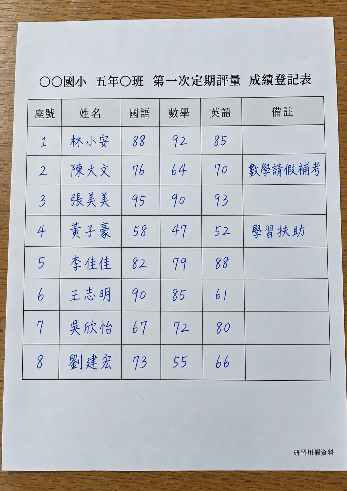
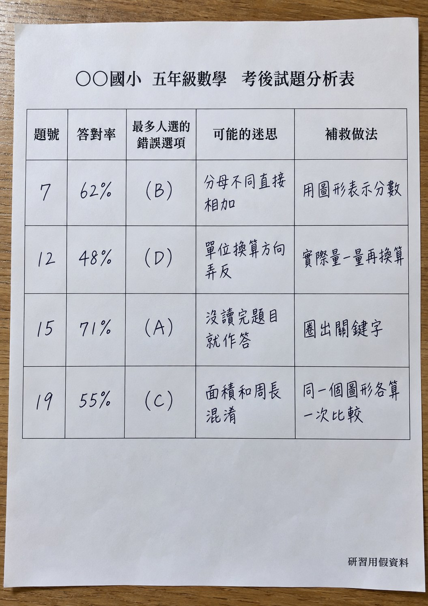
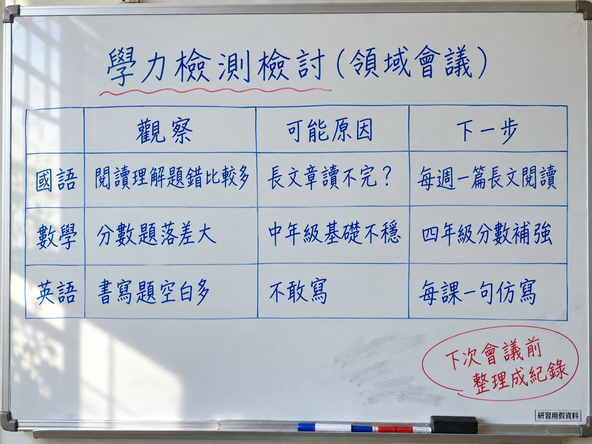

考哪些年級、哪些內容
哪些題本校特別弱
同一屆學生四年級的段考
考了什麼、考得像不像
一所示範學校、一個科目（數學）、一屆學生
兩個問題
LINE 群組
去識別
讀照片
Canvas
讀報表
Canvas
對照表
官方影片
做 skill
整個資料夾
一次處理
方向卡
分享
示範學校資料不放在網頁上
| 代碼 | 內容 | 用在哪 |
|---|---|---|
| A04 | 114 年學校成績報表（含附錄公開試題） | 看方向、對段考、錯誤選項 |
| A08-4 | 四年級數學段考：112～114 學年度試卷與雙向細目表 17 份 | 對段考、審校 skill、桌面版 |
| A01～A03 | 111～113 年學校成績報表 | 桌面版跨年整理 |
範例資料由學校提供，只在講師電腦示範，不放在網頁上；班級報表含學生姓名，沒有收
學力檢測 × 段考
一題一題對
學力導向段考審校
回校直接用
P1～P6・A1～A3・K1～K3
N1、N2・D1～D4
AI 協助整理；結論由我們判斷
關於學力檢測和我們的段考，
我聽過或我覺得……（一句話）
例如：「段考考得好，學力檢測就會好」「學力檢測考的我們都有教」
以下（或附件）是主任們對學力檢測成績的說法，可能是 LINE 群組匯出的對話紀錄，也可能是便利貼照片。 1. LINE 對話紀錄：只取每則訊息的內容，刪掉發言者名字和時間 2. 便利貼照片：先逐張抄下每張便利貼的文字 然後分成三類：①用現有資料就能驗證（寫出要用哪份資料、怎麼比）②需要額外資料（寫出缺什麼）③無法或不適合驗證（寫原因）。不要評論說法對錯，用表格呈現。
講師用 LINE 電腦版匯出聊天記錄，貼給 Gemini；便利貼拍照也可以
學校成績報表（全校統計）
段考試卷、雙向細目表
課程計畫、教科書版本表
班級成績報表
學生名單、手寫成績表
活動照片
學力檢測題本
用私人帳號登入的 AI
考題只用「報表附錄的公開試題」

姓名刪掉
座號換代碼
個人狀況備註移除
附件是一張手寫的班級成績登記表照片。請轉成表格，並做去識別化： 1. 刪除姓名欄，座號改成代碼 S01、S02…… 2. 其他欄位照原樣；備註欄如果寫到個人狀況（請假、學習扶助、特教、家庭等），改成「（已移除）」 3. 看不清楚的格子填最可能的值，並在最後一欄寫「待確認」 4. 你的回答裡不要出現任何學生姓名


附件是手寫的考後試題分析表照片。請逐字轉成表格，欄位照原表。看不清楚的字填最可能的，並在最後一欄寫「待確認」與原因。不要補充原表沒有的內容。 附件是會議白板的照片。請：①把白板上的表格逐字轉成表格 ②整理成會議紀錄，分成「觀察」「推測原因」「下一步」③列出要確認這些推測，還需要哪些資料。白板上沒寫的不要補。
📁 範例 A04｜示範學校 A 114 年學校成績報表
考哪些年級的內容
哪些數字不能比
人數百分比、平均答對率
量尺分數
每題的課綱學習內容代碼
＝檢測的雙向細目表
題目原文
各選項選答百分比
📁 範例 A04｜先看解讀說明，再看數字
含學校成績的 Canvas 不要用公開連結分享
https://gemini.google.com附件是本校 114 年基本學力檢測學校成績報表。請只根據這份檔案回答：從報表看得出學力檢測的方向嗎？ 1. 檢測對象是幾年級、考的是哪些年級的學習內容 2. 數學各題的學習內容代碼，依年級（三年級、四年級）和內容向度分類，算出各類題數 3. 報表說明裡有哪些比較的限制（例如能不能跨年比、向度之間能不能比） 用 Canvas 做成一頁網頁：上面是分類圖，下面是題號對照表。每個數字標頁碼，看不清楚寫「看不清」，不要猜。
📁 範例 A04｜示範學校 A 114 年報表
根據報表的「數學各題答對率對照表」（用含特殊生的數字）： 1. 先列出你讀到的每一題：題號、學習內容代碼、核心概念、臺北市、本校，讓我核對 2. 再用 Canvas 畫「本校減臺北市」的差距長條圖，由低到高排序；滑鼠移上去顯示題號與核心概念 3. 差距在 -3 以下標紅、+3 以上標綠，各列成一張表 4. 加上依內容向度篩選的按鈕 每個數字標頁碼。不要把不同向度互相比較。
📁 範例 A04｜先核對原始數字，再看圖
📁 範例 A04｜掃描頁難辨識；表格文字層錯亂會讓 AI 配錯欄位
📁 範例 A04＋A08-4｜114 年報表＋113 學年度四年級段考
| 類別 | 意思 | 接著問 |
|---|---|---|
| A | 段考有考，本校表現不輸全市 | 考得像，就繼續 |
| B | 段考有考，本校仍低於全市 | 考過 ≠ 學會：題型像不像？ |
| C | 段考少考或沒考，本校低於全市 | 要不要多考、多教？ |
| D | 三年級內容，四年級段考範圍外 | 舊概念什麼時候複習？ |
📁 範例 A04＋A08-4｜分類是線索，原因都是推測
附件一是本校 114 年學力檢測報表（這屆學生 113 學年度讀四年級），其餘附件是 113 學年度四年級上、下學期的數學段考試卷和雙向細目表。請分析：段考有沒有對上學力檢測的方向？ 1. 逐題列出學力檢測數學的學習內容（代碼＋核心概念），對照段考：有沒有考、在哪份試卷的哪一題、約幾分、題型（計算／概念理解／情境應用） 2. 每題歸一類：A 段考有考、本校表現不輸全市 B 段考有考、本校仍低於全市 C 段考少考或沒考、本校低於全市 D 三年級內容（四年級段考範圍外） 3. 用 Canvas 做一頁對照網頁：上面是四類題數統計圖，下面是可篩選的對照表 4. B、C 兩類各寫可能原因（標明是推測）和還要看什麼資料 段考出處寫檔名＋大題＋小題，找不到寫「沒找到」，不要猜。
📁 範例 A04＋A08-4｜一次附 6 份：報表、113 上期末與下學期期中期末試卷、2 份細目表
📁 範例 A04＋A08-4｜示範學校資料不放在網頁上
附件是學力檢測報表附錄的公開試題與各選項選答百分比。請找出本校答對率比全市低的題目，寫出本校學生最常選的錯誤選項和比率，推測背後的迷思概念（標明是推測），並各建議一個課堂上可以做的活動，和一題可以放進段考的檢核題。
📁 範例 A04｜只用報表附錄的公開試題
| 資料 | 內容 | 交給誰 |
|---|---|---|
| 分析影片 | 各年度各科一支（111～113 年度） 數學一支約 50 分鐘 | NotebookLM |
| 分析報告、簡報 | 每支影片都有對應的 PDF | NotebookLM、桌面版整批讀 |
| 《北市教學力》 | 2025 年國小基本學力檢測，教學面的建議 | NotebookLM |
下載頁選「學力檢測結果分析」→ 影片／簡報；114 年度的分析影片尚未上架
https://tebca.tp.edu.tw/download影片沒有字幕，若 YouTube 匯入失敗，就用同名的分析報告 PDF
https://notebooklm.google.com來源是臺北市學力檢測 112、113 年度的數學檢測結果分析影片與報告。請只根據來源整理： 1. 檢測想考到的能力與命題方向，各舉來源中的一題例子 2. 學生常見的錯誤與迷思，依內容向度（數與量、空間與形狀、關係、資料與不確定性）分類 3. 給學校段考命題的建議 每一點標出處（影片時間點或報告頁碼），來源沒講的不要補。
來源：112、113 年度數學分析影片＋分析報告
我另外加了本校的「學力檢測×段考對照表」當來源。請找出表中 B、C 類的概念，在影片和報告裡有沒有談到；有的整理成「常見錯誤／教學建議／命題建議」三欄並標出處，沒談到的寫「來源沒有」。 最後把全部整理成一份「段考命題檢查清單」，我要當 skill 的知識檔。
📁 範例 A04＋A08-4｜把 P4 的對照表加成來源；做出的清單＝skill 的知識檔
用途、做法、輸出格式
不能做的事
附上試卷
就照說明書做
同學年、同領域
用同一把尺審題
Gemini 的 Gem 正在改成 skill；學校帳號的 Gem 這學期照用，說明書寫法一樣
請幫我寫一份 Gemini skill 的說明書，用途是「依學力檢測的方向審校本校數學段考試卷」。 參考：附件是我們剛做好的「學力檢測×段考對照表」。 說明書要有：名稱、什麼時候用、要老師提供什麼、逐步做法、輸出格式、不能做的事。 寫給同事看得懂的白話，500 字內。
附上 P4 做好的對照表；AI 寫完，你再改成學校的用語
名稱：學力導向段考審校 什麼時候用：段考試卷審題前，檢查試卷有沒有對上學力檢測的方向。 老師提供：試卷（必要）、雙向細目表（有的話）。 做法： 1. 逐題列表：大題、小題、配分、學習內容代碼、題型（計算／概念理解／情境應用） 2. 對照雙向細目表：配分加總、各單元比重、能力向度與試卷是否一致，不一致的列出來 3. 對照學力檢測方向： ・題目有沒有考到理解（圖、數線、操作情境），不只是算式 ・情境題要不要讀題、找出多餘資訊、兩步驟以上 ・選擇題的錯誤選項有沒有對應常見迷思 ・知識檔「本校弱點清單」裡的概念有沒有考到 ・知識檔「段考命題檢查清單」逐項檢查 輸出：①逐題表 ②與細目表不一致處 ③三個優先修改建議，各附一題改寫範例 ④這份試卷做得好的地方 不能做：改變考試範圍、評論命題老師；試卷上若有學生姓名或成績，先提醒並停止。
知識檔：本校弱點清單（P4 的 B、C 類）＋段考命題檢查清單（N2）
學校帳號介面以當天實測為準；先自己用，確定好用再分享給同事
/學力導向段考審校 附件是四年級下學期數學期中評量的試卷草稿，請依說明書審校。改寫範例要符合四年級程度，不要超出這次的考試範圍。
📁 範例 A08-4｜114 學年度下學期四年級期中試卷（這屆會參加 115 年檢測）
沒帶試卷：用 LINE 群組裡的練習素材；測完把好用的版本丟到群組
| 工具 | 擅長 | 注意 |
|---|---|---|
| ChatGPT 桌面版 （本機專案） | 指定一個資料夾，逐份讀、另存 Excel 可以搭配 skill | 今天示範這款 免費帳號可用範圍請先試 |
| Claude 桌面版 （Cowork） | 交代資料夾任務，產出整理好的檔案 | 要付費方案 |
| Gemini 桌面版 | 快捷鍵叫出、上傳檔案問答 | 適合隨手問；整批處理用上面兩款 |
要逐份審閱，就要它交回檔案清單和讀取結果，人工核對有沒有漏
先去識別化
再交給 AI
只加入要處理的資料夾
先複製一份再試
交代清楚：
不要動原檔
這個資料夾是一個年級三個學年的數學段考試卷和雙向細目表。請逐份讀，整理成一張 Excel，一題一列：學年、學期、期中或期末、大題、小題、配分、學習內容代碼、題型（計算／概念理解／情境應用）。 1. 學習內容代碼依課綱判斷；不確定的填最可能的，字改紅色，最後一欄寫原因 2. 第二個工作表：依代碼加總每學年的配分 3. 不要改動原本的檔案，Excel 另存在同一個資料夾 4. 做完告訴我總共讀了幾份、有幾份讀不到
📁 範例 A08-4｜四年級數學段考 17 份（112～114 學年度）
請用「學力導向段考審校」的做法，逐份審校這個資料夾裡所有的段考試卷（有雙向細目表的一起對照）。 每份試卷另存一個審校報告（檔名＝原檔名＋「_審校」），最後再做一張總表：每份試卷一列，列出三個優先修改建議的重點。 不要改動原本的檔案。做完告訴我審了幾份、有幾份讀不到。
📁 範例 A08-4｜先把 K2 說明書放進本機專案，或直接貼在指令前面
這個資料夾是臺北市學力檢測 111～113 年度各科的結果分析報告與簡報（PDF）。請逐份讀，整理成一張 Excel，一個建議一列：年度、科目、內容向度、學生常見錯誤、教學建議、命題建議、出處（檔名＋頁碼）。 1. 第二個工作表只留數學，依內容向度排序，合併重複的建議 2. 另存新檔，不要改動原檔 3. 做完告訴我讀了幾份、有幾份讀不到
先從學力檢測網把報告、簡報下載到同一個資料夾；影片交給 NotebookLM，PDF 整批交給桌面版
資料夾裡有 111～114 年四份學校成績報表。請逐份找出國語、數學、英語三科的成就水準人數百分比（本校、臺北市）和平均答對率，整理成一張 Excel：一年一列、一科一組欄位，每個數字旁邊標「檔名＋頁碼」。看不清楚的格子寫「看不清」並標紅，不要猜。另存新檔，不要改動原檔。
📁 範例 A01～A04｜示範學校 A 111～114 年學校成績報表
跨年是不同屆學生，差異先當線索，不當結論
先確認帳號與電腦能開本機專案；一般雲端專案不會直接讀寫本機資料夾
https://chatgpt.com/download根據我們剛才的分析，幫我寫一張「學校改變方向卡」：一個最值得優先處理的弱點、支持證據（附頁碼與段考出處）、2～3 個可能原因（標明是推測）、一個下學期段考或教學可以做的具體行動、明年用什麼數據檢核有沒有效。用表格，300 字內。
一個優先弱點，先做一個具體行動
| 資料 | 準備重點 |
|---|---|
| 1 學校成績報表 | 每年一份；班級報表不上傳 |
| 2 報表附錄公開試題 | 題目原文與選項選答率 |
| 3 歷年段考試卷 | 同一屆學生考前一年的期中、期末 |
| 4 雙向細目表 | 最好有能力向度欄（概念／程序／應用） |
| 5 考後試題分析 | 學生錯在哪一題、選哪個 |
| 6 課程計畫 | 各單元節數，對照 C 類概念 |
| 7 教科書選用版本 | 各年級版本，跨校比較時才用得到 |
附件一是本校學力檢測報表，附件二是學習扶助測驗校級統計。請比較本校三科「未達基礎級」比率與學習扶助篩選測驗未通過率，說明兩者方向是否一致；不一致的話列出可能原因，並說明這兩項測驗的對象和時間有什麼不同。
附件是全市國小的學校條件表。請找出與本校在學生數、低收入與中低收入學生比例、新住民子女比例最接近的 5 所學校，列出比較表，並說明你用什麼方法判斷「接近」。
跨校比較學力檢測，先取得各校同意分享報表